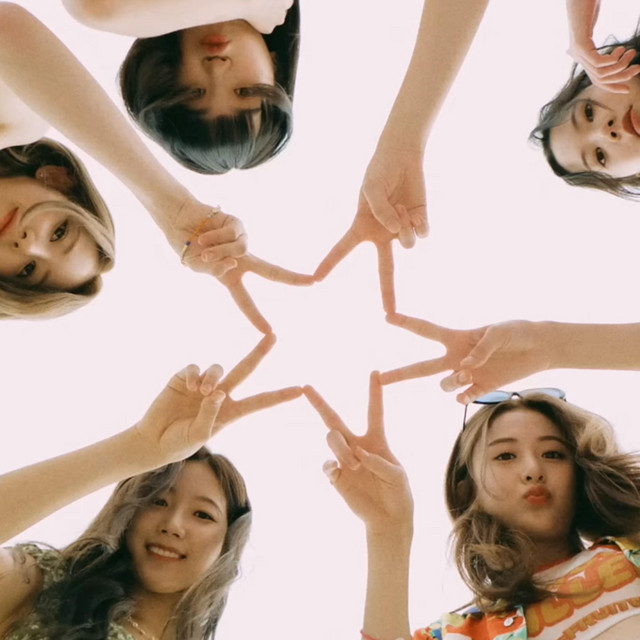

Hobbies
. . .

I present to you my first hobby: speedcubing! I learned to solve the Rubik’s cube when I went to high school. I was influenced by my sister and classmates into cubing. I watched a lot of speedcubers in YouTube and I wonder, what if I become as fast as they are? So, I taught myself lots of algorithms to reduce my times in the Rubik’s Cube. I learned a lot of new patterns and hasten my speed in solving the cube, and now I can solve a Rubik’s Cube in under 10 seconds, just like the people I saw in YouTube! I also learned to speedsolve other kinds of cubes like the 2×2 and the 4×4, but I still play with the 3×3 the most!

I present to you my second hobby: making and listening to music! I made and listened to many genres of music since I was a child. I was influenced by my father into music. I am in a band named Kontratyempo, as well as Makol. These two bands helped me enhance my skill in making music. I also joined the singing competition: The Voice Kids of the Philippines. It helped me hone my singing talent so that I could use it in making music. I also listen to many kinds of music. I like K-pop artists and western artists, and I also like bands from the Philippines as well. I actually composed a song named Is This What I Deserve? and it was released in various streaming platforms, such as Spotify.

I present to you my third hobby: gaming! I played different kinds of games since I was a child. I was influenced by my father and my friends into gaming. I really love playing games such as The Elder Scrolls V: Skyrim, Destiny 2, League of Legends, VALORANT, and Genshin Impact! I want to play games with my friends rather than playing alone, but I sometimes want to play roleplay games such as Skyrim, Destiny 2, and Genshin Impact. I may not play well at these games, but they sure are a lot of fun!